Fluxograma Fácil
Manual de instruções
Para abrir, digite no navegador: fluxograma.guiaaps.com.br
Baixar este manual em PDF1. O que é
O Fluxograma Fácil serve para montar o fluxograma de atendimento do plano de contingência das arboviroses do seu município: formas, setas e texto, pronto para imprimir ou salvar em PDF.
Ele foi feito para ser mais fácil que o PowerPoint: você clica na forma e escreve, arrasta para mudar de lugar, e tudo se ajeita sozinho.
O sistema não traz texto pronto: quem escreve o conteúdo do fluxograma é cada município, conforme o seu protocolo e a sua rede de atendimento.
2. Começando
Ao abrir pela primeira vez, você escolhe como começar:
- Começar com o modelo: as formas já vêm no lugar, todas em branco. É só escrever.
- Começar com a folha vazia: só o título. Você põe as formas que quiser.
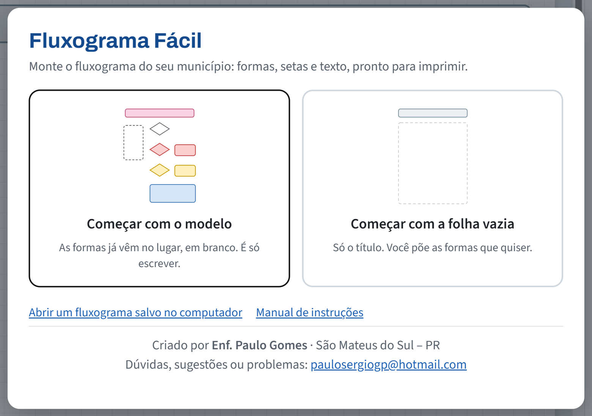
Nas próximas vezes, o sistema abre direto no fluxograma em que você estava trabalhando.
3. A tela
- No alto: os botões de desfazer, salvar, abrir, imprimir, começar outro e tirar dúvida.
- À esquerda: as formas que você pode pôr na folha, o botão Seta e o botão de deitar a folha.
- No meio: a folha A4.
- À direita: as opções do que está escolhido (cor, letra, apagar...).
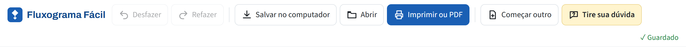
4. Escrever numa forma
- Clique uma vez na forma.
- Quando aparecer o risquinho piscando, digite.
- Para pular uma linha, aperte Enter.
- Para terminar, clique fora da forma.
Se o texto não couber, a forma cresce sozinha para baixo.
Para corrigir, clique no ponto do texto e use a tecla de apagar (Backspace).
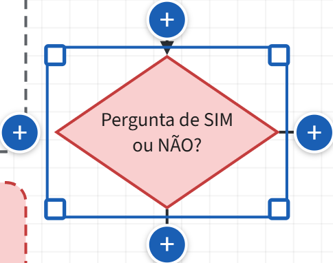
5. Mover e mudar o tamanho
Mover: aperte o botão do mouse em cima da forma e, sem soltar, arraste. Ela se ajeita sozinha e as setas vão junto.
Mudar o tamanho: clique na forma. Aparecem quadradinhos azuis nos cantos: puxe um deles para aumentar ou diminuir.
Várias de uma vez: aperte o mouse num lugar vazio da folha e arraste, fazendo um retângulo em volta das formas. Depois, arraste todas juntas.
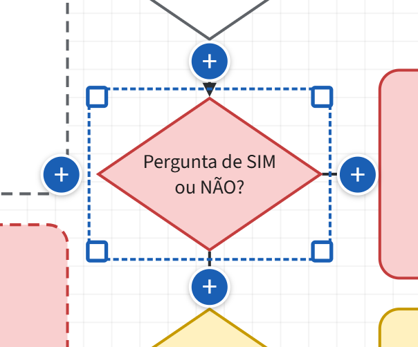
6. Pôr uma forma nova
Use os botões da esquerda, em Pôr na folha:
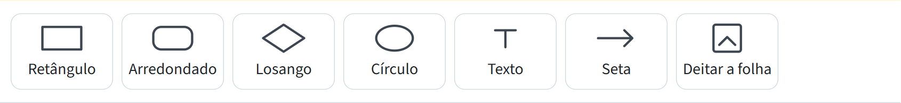
- Losango: uma pergunta de SIM ou NÃO.
- Retângulo ou Arredondado: o que fazer, o passo, o lugar.
- Círculo: o começo ou o fim do fluxo.
- Texto: uma observação solta, sem caixa.
Clique no botão: a forma aparece na folha, pronta para escrever. Depois, arraste para o lugar certo.
7. Ligar as formas com setas
Jeito mais fácil: o + azul
Clique numa forma e depois no + azul do lado onde você quer a próxima. Nasce outra forma igual, já ligada por seta, pronta para escrever.
Ligar duas formas que já existem: o botão Seta
- Clique no botão Seta, à esquerda. Aparece uma faixa amarela no alto.
- Clique na forma de onde a seta sai.
- Clique na forma aonde a seta chega.
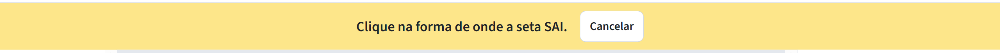
As setas ficam presas às formas: se você mover a forma, a seta vai junto.
8. SIM ou NÃO na seta
- Clique em cima da seta. Ela fica azul.
- No painel da direita, clique em SIM ou NÃO.
- Para outra palavra, escreva em Ou escreva outro e clique em Pôr.
No mesmo painel dá para inverter a seta (se ela apontou para o lado errado) ou ajustar o caminho dela (por onde sai e por onde chega).
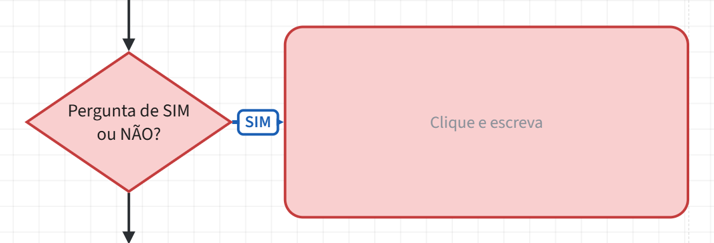
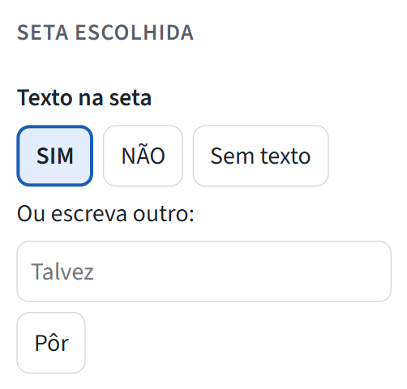
9. Cor, borda, letra e formato
Clique na forma e use o painel da direita:
- Cor: clique na cor que quiser.
- Borda: Lisa ou Tracejada (pontilhada).
- Letra: A+ aumenta, A− diminui, Negrito deixa forte; À esquerda serve para listas.
- Trocar a forma: vira losango, círculo... sem perder o texto.
- Duplicar faz uma cópia; Apagar apaga.
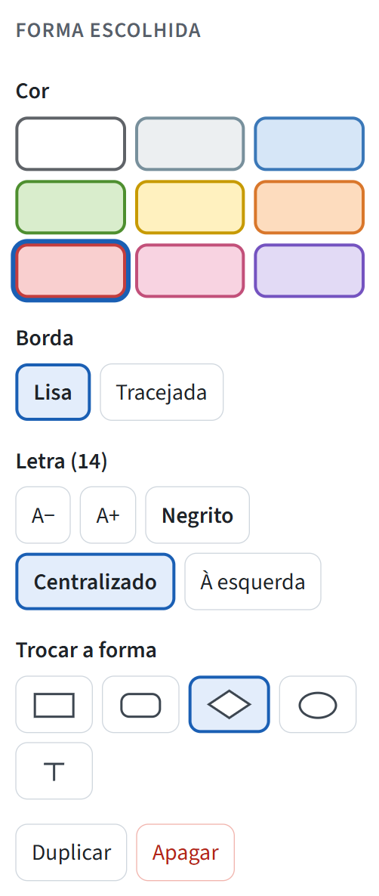
10. Apagar e desfazer
- Apagar uma forma ou seta: clique nela e depois em Apagar, no painel da direita (ou aperte a tecla Delete). As setas da forma somem junto.
- Errou? Clique em Desfazer, no alto (ou Ctrl + Z). Cada clique volta um passo. Voltou demais? Refazer.
Pode mexer sem medo: tudo pode ser desfeito.
11. Título e folha deitada
- Título: clique na faixa do alto da folha e escreva. Para mudar a cor da faixa, clique nela e escolha no painel da direita.
- Folha deitada: clique em Deitar a folha, à esquerda. O modelo foi feito com a folha em pé; se deitar e ficar bagunçado, clique em Desfazer.
12. Imprimir ou salvar em PDF
- Clique em Imprimir ou PDF, no alto, e depois em Continuar.
- Para papel: escolha a impressora e clique em Imprimir.
- Para PDF: em Destino, escolha Salvar como PDF e clique em Salvar.
Sai só a folha, em A4, com as cores. Os quadradinhos cinza e as dicas "Clique e escreva" não saem no papel.
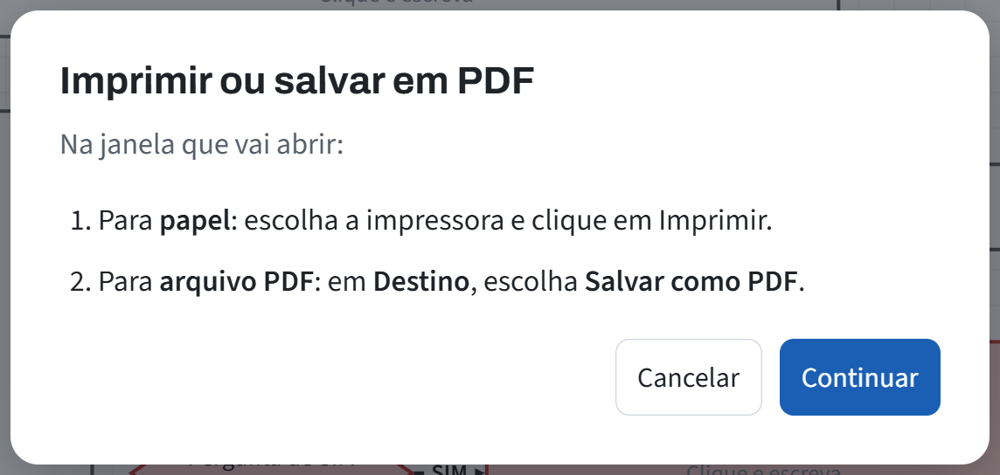
13. Salvar e continuar depois
- Enquanto você trabalha, o sistema guarda tudo sozinho neste computador (aparece ✓ Guardado no alto). Pode fechar e abrir de novo: estará tudo lá.
- Para ter um arquivo, ou continuar em outro computador: clique em Salvar no computador. O arquivo vai para a pasta Downloads, com o nome "Fluxograma - ...". No outro computador, abra o site e clique em Abrir.
- Para mandar para a Regional: mande o PDF (item 12). Se for para alguém continuar mexendo, mande o arquivo do "Salvar no computador".
14. Tire sua dúvida
Clique no botão amarelo Tire sua dúvida, no alto, e escreva do seu jeito, por exemplo: "errei, como volto?", "a seta ficou torta", "quero salvar em pdf".
A resposta vem em passos. O botão Mostrar na tela faz piscar, em laranja, o botão que você precisa usar.
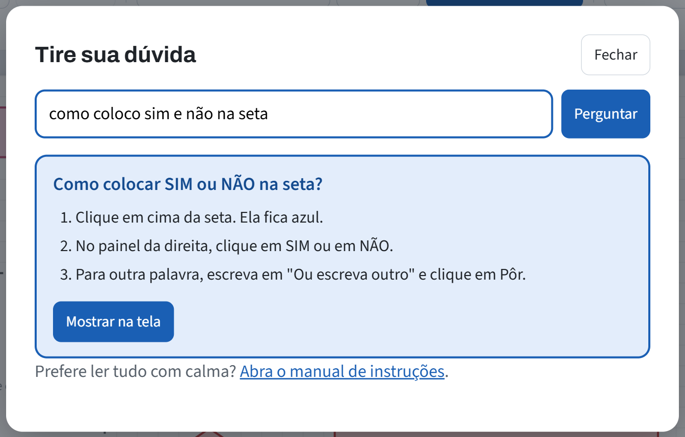
15. Problemas comuns
- Apaguei sem querer.
- Clique em Desfazer, no alto, quantas vezes precisar.
- Uma forma sumiu atrás de outra.
- Clique na parte que aparece (ela vem para a frente) e arraste para um lugar livre.
- A forma ficou com contorno vermelho.
- Ela passou da margem da folha e pode sair cortada. Diminua a letra ou alargue a forma.
- A seta ficou torta.
- Alinhe as formas (uma embaixo ou ao lado da outra) ou clique na seta e use "Ajustar caminho".
- Fechei a página. Perdi tudo?
- Não. Abrindo de novo no mesmo computador e no mesmo navegador, está tudo lá.
- Dá para usar no celular?
- Dá para ver e imprimir, mas montar é bem mais fácil no computador, com mouse.